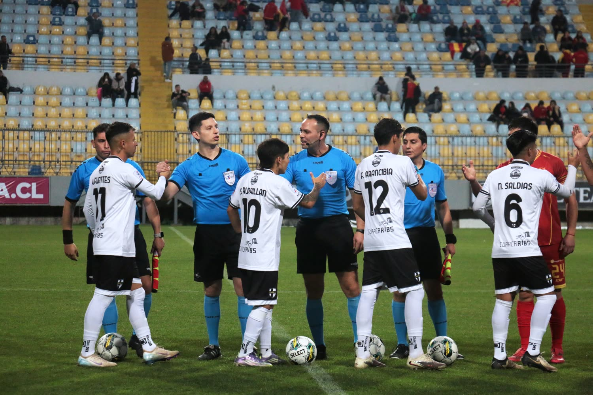
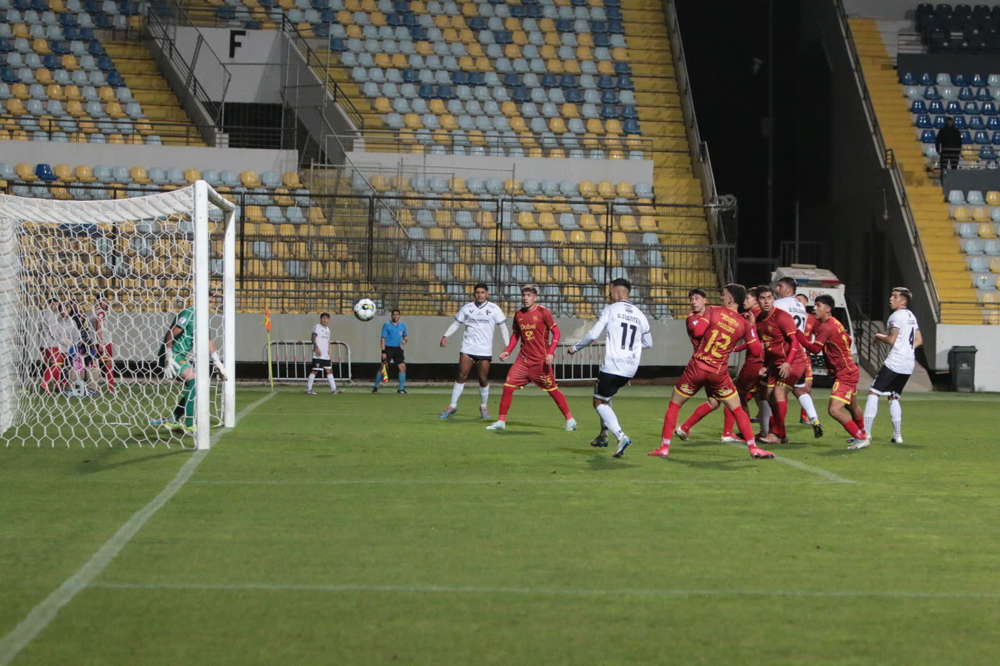
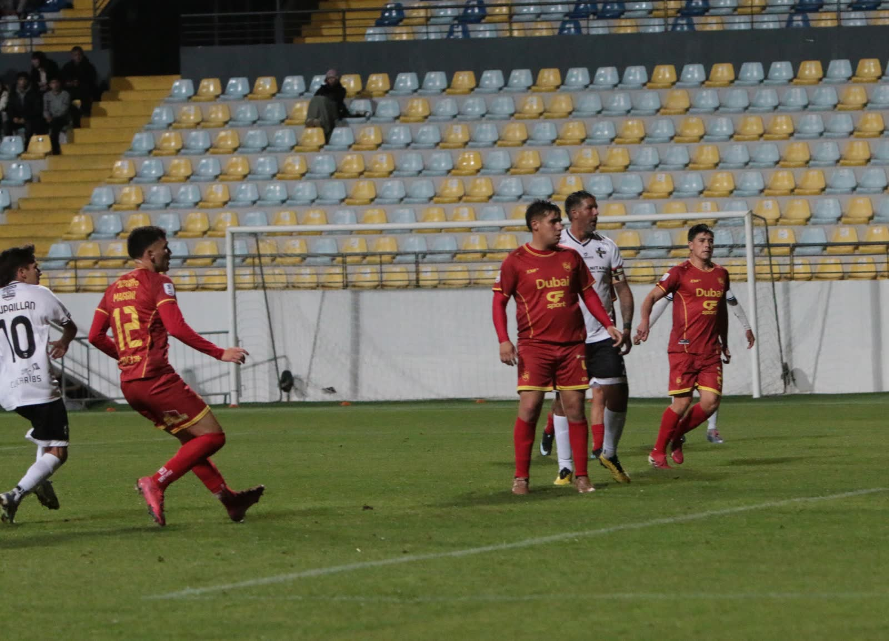
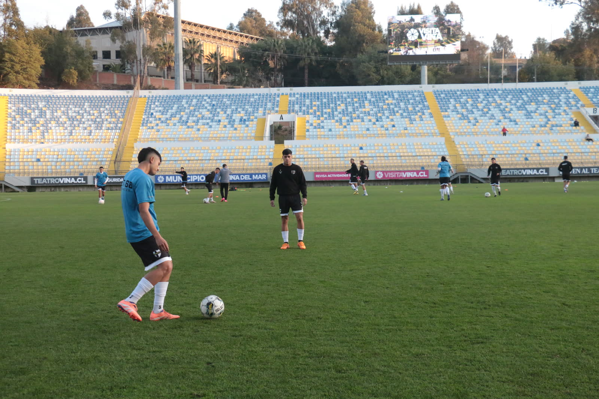

Por un pago único de $100.000 CLP, tu marca acompaña al club en cada partido de la temporada 2026. Cupos limitados a 500 empresas locales.

Curacaví FC compite en la Tercera División B sin transmisión de TV ni grandes patrocinadores, dependiendo casi por completo del aporte de su gente. El Plan de Salvataje nace para asegurar que el club siga compitiendo, pagando traslados, arbitrajes y el cuerpo técnico durante toda la temporada.
En vez de buscar un solo gran auspiciador, dividimos la camiseta oficial en 500 espacios para que cualquier Pyme o negocio local de Curacaví pueda ser parte — con un aporte fijo, simple y accesible.
Club Deportivo Municipal (Perú) enfrentó una crisis similar y vendió 1.000 espacios de su camiseta a pequeños negocios en solo 3 meses, asegurando el financiamiento de su primer equipo y sus divisiones formativas.
Sin trámites complicados ni negociaciones. Un valor único para todas las empresas.
Paga los $100.000 CLP de forma segura con Mercado Pago o coordina directo por Instagram.
Te contactamos para coordinar el archivo de tu marca y confirmar tu espacio en el mosaico de la camiseta.
Tu marca queda sublimada en la camiseta oficial y presente en las redes del club durante toda la temporada 2026.
Tu marca en la camiseta oficial, en las redes del club (+7.800 seguidores) y presente en cada partido en el Estadio Julio Riesco.
El aporte se documenta como servicio de publicidad y es 100% deducible de la renta líquida imponible (Art. 31, Ley de Impuesto a la Renta).
Al cierre de temporada recibes un informe con el alcance digital y la exposición obtenida por tu marca durante el año.

Representación del mosaico — 500 espacios en la camiseta oficial
Gracias a la sublimación digital, cientos de logos pueden convivir en una misma prenda sin costo adicional de fabricación — por eso el valor se mantiene fijo y accesible para cualquier negocio local.
Elige el plan que mejor represente a tu negocio en Curacaví FC.
Ideal para negocios y emprendimientos locales que quieren ser parte del mosaico oficial.
Para empresas que buscan la posición más visible: el pecho de la camiseta oficial.
¿Ya eres parte? Conoce a las empresas sponsors →
Tercera División B · ANFA · Estadio Olímpico Municipal Julio Riesco, Curacaví, RM

Fecha a fecha en la B
El equipo en competencia
Preparación semana a semanaSíguenos en @curacavi.fcoficial — #JuntosSomosMás 🧡🖤
Sabemos que la confianza se construye con hechos. Cada Sponsor Pyme recibe un comprobante formal de su aporte y un canal directo para hacer seguimiento del estado de su reconocimiento en camiseta y redes.
Si tienes una consulta sobre un pedido o pago anterior, escríbenos por Instagram y te responderemos con el estado actualizado — la prioridad hoy es que cada aporte se traduzca en resultados visibles para tu negocio.
A través de Mercado Pago (tarjetas de crédito, débito o transferencia) desde la página "Sé Colaborador", o coordinando directamente con la directiva por Instagram.
Sí. El club emite la documentación correspondiente como prestación de servicios publicitarios, lo que permite deducirlo como gasto necesario para producir renta según el Artículo 31 de la Ley sobre Impuesto a la Renta.
Tu marca queda vigente hasta el cierre de la temporada 2026, con posibilidad de renovar para 2027.
Se abre una lista de espera para la próxima temporada y puedes optar al plan Main Sponsor si buscas presencia inmediata.
Una vez confirmado tu espacio, te contactamos por WhatsApp o Instagram para coordinar el archivo en alta resolución de tu marca.
500 espacios, un club, una comunidad. Asegura el tuyo antes de que se agoten.